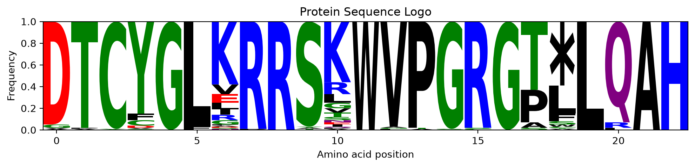
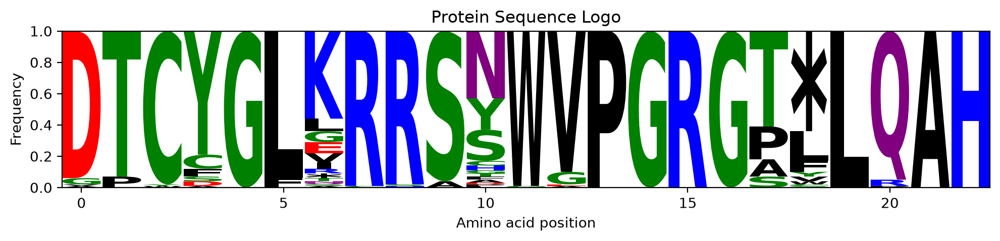
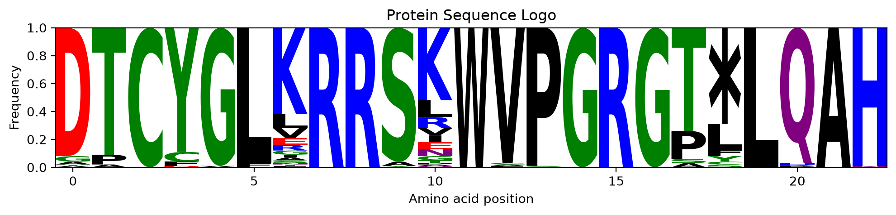
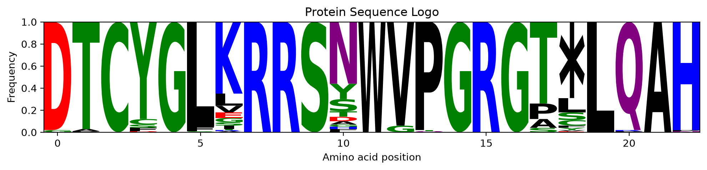
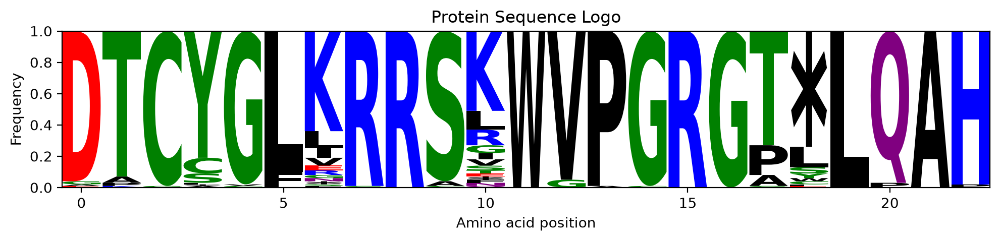
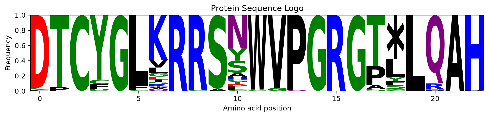
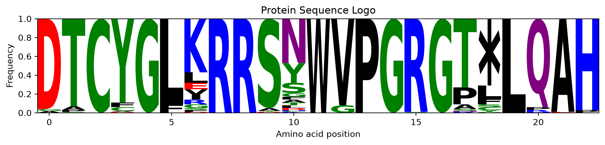
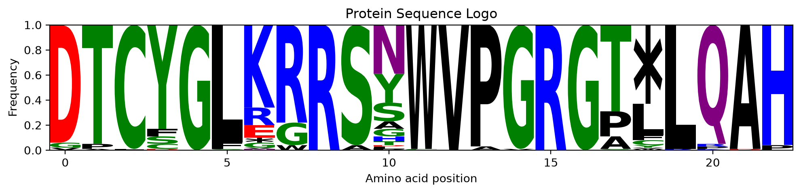
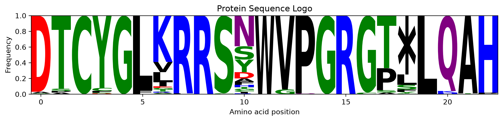
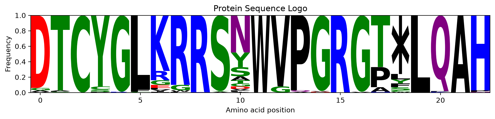

Deep learning models to predict the population of VR (Variable Region) sequences generated by a given TR design. Uses LSTM neural networks trained on DGRec experimental data to model bRT’s position-dependent, context-dependent error-prone reverse transcription, including the snowball effect where prior mutations increase subsequent error rates.
Model components
Custom loss function, metrics, and model separation utilities.
generate_sequences_oneTR
def generate_sequences_oneTR( TR:str, # TR sequence n:int=1000, # Number of VR to generate)->list[str]: # List of `n` generated VR sequences.
Generate multiple VR sequences from a single TR sequence.
Parameters
TR : str Input TR nucleotide sequence. n : int, default=1000 Number of VR sequences to generate.
Returns
list of str List of n generated VR sequences.
generate_sequences
def generate_sequences( X_seq:list[str], # list of TR sequences)->list[str]: # List of generated VR sequences, in the same order as `X_seq`.
Generate VR sequences from a list of TR sequences.
Each TR sequence produces exactly one VR sequence.
Parameters
X_seq : list of str List of TR nucleotide sequences (e.g. “ATCG”). For faster generation, all sequences should have the same length.
Returns
list of str List of generated VR sequences, in the same order as X_seq.
Notes
If all input sequences have the same length, generation is vectorized for improved performance.
Output sequences are returned in the original (non-reversed) order.
Generate predicted VR sequences from TR inputs using the LSTM model.
Protein diversity evaluation
Evaluate and visualize protein-level diversity from generated sequences.
predict_protein_diversity
def predict_protein_diversity( TR:str, # The TR sequence NDGR:int=100, # Number of VR to generate offset:int=0, # The offset for protein translation plot:bool=False, # draw the amino-acid sequence logo)->collections.Counter: # Counts of translated protein sequences.
Evaluate protein diversity accessible from a TR sequence via DGR.
Generates VR sequences from a single TR, translates them into proteins, and returns the amino-acid frequencies; pass plot=True for a sequence logo.
Parameters
TR : str Input TR nucleotide sequence. NDGR : int, default=100 Number of VR sequences to generate from the TR. offset : int, default=0 Nucleotide offset applied before translation to protein.
Notes
Translation is performed after applying the nucleotide offset.
The sequence logo shows per-position amino-acid probabilities.
c = predict_protein_diversity('CGTAAACCGGACCTAGTTAACTTCTTAGACCAAGGTACATATCCCCGTAACATAAGACGCGACTGGGCCC') c.most_common(5)
seq ='GACACCTGCTATGGATTAAAAAGGCGCTCCCGTTGGGTACCAGGTCGCGGCACCTAACTGCAGGCACATC'#codon 10 must be able to reach R and Y, and among the codons that can,#take the one reaching the most other amino acidsfrom dgrec import optimize_sequence variants = optimize_sequence(seq, N=5, CHANGES=6, diversify={10: ('max', ['R','Y'])})for v in variants: v['Proteins'] = predict_protein_diversity(v['New_Variant'], plot=True)
/pasteur/helix/projects/SynBio_projects/dbikard/dgrec_bioinfo/.venv-lstm/lib/python3.13/site-packages/logomaker/src/error_handling.py:58: UserWarning: Warning: Character '*' is not in color_dict. Using black.
warnings.warn(str(Error))
/pasteur/helix/projects/SynBio_projects/dbikard/dgrec_bioinfo/.venv-lstm/lib/python3.13/site-packages/logomaker/src/error_handling.py:58: UserWarning: Warning: Character '*' is not in color_dict. Using black.
warnings.warn(str(Error))
/pasteur/helix/projects/SynBio_projects/dbikard/dgrec_bioinfo/.venv-lstm/lib/python3.13/site-packages/logomaker/src/error_handling.py:58: UserWarning: Warning: Character '*' is not in color_dict. Using black.
warnings.warn(str(Error))
/pasteur/helix/projects/SynBio_projects/dbikard/dgrec_bioinfo/.venv-lstm/lib/python3.13/site-packages/logomaker/src/error_handling.py:58: UserWarning: Warning: Character '*' is not in color_dict. Using black.
warnings.warn(str(Error))
/pasteur/helix/projects/SynBio_projects/dbikard/dgrec_bioinfo/.venv-lstm/lib/python3.13/site-packages/logomaker/src/error_handling.py:58: UserWarning: Warning: Character '*' is not in color_dict. Using black.
warnings.warn(str(Error))
<Figure size 1200x400 with 0 Axes>

<Figure size 1200x400 with 0 Axes>

<Figure size 1200x400 with 0 Axes>

<Figure size 1200x400 with 0 Axes>

<Figure size 1200x400 with 0 Axes>

seq ='GACACCTGCTATGGATTAAAAAGGCGCTCCCGTTGGGTACCAGGTCGCGGCACCTAACTGCAGGCACATC'#codon 10 must be able to reach R and Y, and among the codons that can,#take the one reaching the fewest other amino acidsfrom dgrec import optimize_sequence variants = optimize_sequence(seq, N=5, CHANGES=6, diversify={10: ('min', ['R','Y'])})for v in variants: v['Proteins'] = predict_protein_diversity(v['New_Variant'], plot=True)
/pasteur/helix/projects/SynBio_projects/dbikard/dgrec_bioinfo/.venv-lstm/lib/python3.13/site-packages/logomaker/src/error_handling.py:58: UserWarning: Warning: Character '*' is not in color_dict. Using black.
warnings.warn(str(Error))
/pasteur/helix/projects/SynBio_projects/dbikard/dgrec_bioinfo/.venv-lstm/lib/python3.13/site-packages/logomaker/src/error_handling.py:58: UserWarning: Warning: Character '*' is not in color_dict. Using black.
warnings.warn(str(Error))
/pasteur/helix/projects/SynBio_projects/dbikard/dgrec_bioinfo/.venv-lstm/lib/python3.13/site-packages/logomaker/src/error_handling.py:58: UserWarning: Warning: Character '*' is not in color_dict. Using black.
warnings.warn(str(Error))
/pasteur/helix/projects/SynBio_projects/dbikard/dgrec_bioinfo/.venv-lstm/lib/python3.13/site-packages/logomaker/src/error_handling.py:58: UserWarning: Warning: Character '*' is not in color_dict. Using black.
warnings.warn(str(Error))
/pasteur/helix/projects/SynBio_projects/dbikard/dgrec_bioinfo/.venv-lstm/lib/python3.13/site-packages/logomaker/src/error_handling.py:58: UserWarning: Warning: Character '*' is not in color_dict. Using black.
warnings.warn(str(Error))
<Figure size 1200x400 with 0 Axes>

<Figure size 1200x400 with 0 Axes>

<Figure size 1200x400 with 0 Axes>

<Figure size 1200x400 with 0 Axes>

<Figure size 1200x400 with 0 Axes>

Likelihood computation
Compute log-likelihood of observed VR sequences given a TR.
compute_likelihood
def compute_likelihood( TR, # Reference/template sequence. VR, # Variant sequence to score.): # Log-likelihood of VR given TR.
Compute the log-likelihood of generating a variant sequence (VR) given a template/reference sequence (TR).
def compute_likelihood_batch( TR_batch, # List of reference/template sequences. VR_batch, # List of variant sequences.): # Log-likelihoods for each (TR, VR) pair.
Compute log-likelihoods for a batch of (TR, VR) sequence pairs.
All sequences in the batch must: - Have matching TR/VR lengths - Share the same sequence length across the batch
Parameters
TR_batch : list of str List of reference/template sequences. VR_batch : list of str List of variant sequences.
Returns
list of float Log-likelihoods for each (TR, VR) pair.
compute_likelihood_list
def compute_likelihood_list( TR_list, # Reference/template sequences. VR_list, # Variant sequences.): # Log-likelihoods in the same order as input.
Compute log-likelihoods for (TR, VR) pairs, of any mix of lengths.
Parameters
TR_list : list of str Reference/template sequences. VR_list : list of str Variant sequences.
Returns
list of float Log-likelihoods in the same order as input.
def compute_likelihood_matrix( TR_list, # List of reference/template sequences. VR_list, # List of variant sequences. batch_size:int=64, # Unused; kept for backwards compatibility.): # Matrix of log-likelihoods, rows indexed by TR and columns by VR.
Compute a matrix of log-likelihoods where each entry (i, j) corresponds to the log-likelihood of generating VR_list[j] from TR_list[i].
Sequences with mismatched lengths are assigned -inf.
Parameters
TR_list : list of str List of reference/template sequences. VR_list : list of str List of variant sequences. batch_size : int Unused; kept for backwards compatibility.
Returns
list of list of float Matrix of log-likelihoods, rows indexed by TR and columns by VR.